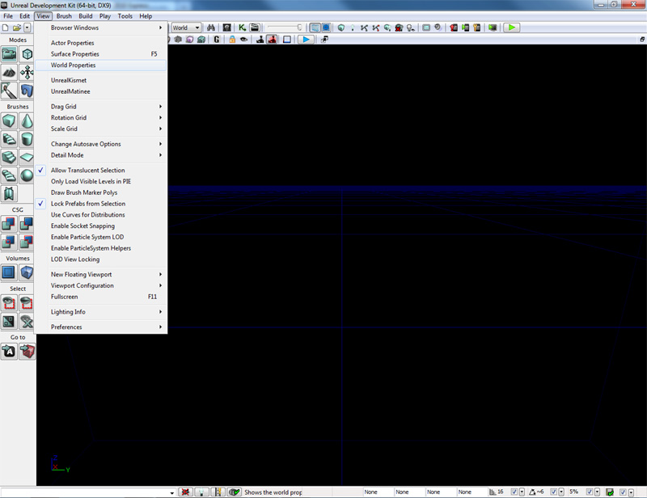

UDN
Search public documentation:
DevelopmentKitGemsAddingMapSpecificDebuggingOptionsCH
English Translation
日本語訳
한국어
Interested in the Unreal Engine?
Visit the Unreal Technology site.
Looking for jobs and company info?
Check out the Epic games site.
Questions about support via UDN?
Contact the UDN Staff
日本語訳
한국어
Interested in the Unreal Engine?
Visit the Unreal Technology site.
Looking for jobs and company info?
Check out the Epic games site.
Questions about support via UDN?
Contact the UDN Staff
UE3 主页 > 虚幻开发工具包精华文章 > 添加针对地图的调试选项
添加针对地图的调试选项
于 2011 年 5 月对 UDK 进行最后测试
可以与 PC 和 iOS 兼容
概述
在开发过程中不是始终可以轻松地访问虚幻控制台调试您的项目。尤其是在移动平台上是这样的，例如，iOS。它会向您显示一个针对地图的方法来打开及关闭选项。
MapInfo 方法
通过使用 MapInfo 存储调试数据，所有内容创建者都可以轻松地更改调试选项。在这里将调试选项显示为一个可以打开或者关闭的布尔变量，但是您可以根据自己的意愿使用任何变量类型。使用这种方法的优点是它是针对地图的，所以您可以为其中出现已知问题的地图标示一组调试选项。缺点是在启动地图的时候，会实例化这个地图信息，而且您将无法快速更改这些标志。 在这里使用了静态函数，这样获取调试选项的值会变得更加容易。通过查找 WorldInfo 实例运行函数，通过使用在 WorldInfo 中找到的 native 静态函数来进行。如果找到了这个 WorldInfo 实例，那么通过 GetMapInfo() 转换返回的 MapInfo 实例类型找到这个 MyMapInfo 实例。如果找到了这个 MyMapInfo 实例，那么它会返回 MyDebugOption 。
class MyMapInfo extends MapInfo;
var(Debug) bool MyDebugOption;
static function bool IsDebuggingOptionOn()
{
local WorldInfo WorldInfo;
local MyMapInfo MyMapInfo;
// 静态获取 WorldInfo 实例
WorldInfo = class'WorldInfo'.static.GetWorldInfo();
if (WorldInfo != None)
{
// 获取 MyMapInfo 实例
MyMapInfo = MyMapInfo(WorldInfo.GetMapInfo());
if (MyMapInfo != None)
{
// 返回 MyDebugOption 的值
return MyMapInfo.MyDebugOption;
}
}
// 无法获取 WorldInfo 或 MyMapInfo 的实例，所以返回默认值
return false;
}
defaultproperties
{
}
如何在虚幻脚本中实现
使用调试选项与调用静态函数一样简单。
if (class'MyMapInfo'.static.IsDebuggingOptionOn())
{
Canvas.SetPos(0, 0);
Canvas.SetDrawColor(255, 0, 255);
Canvas.Font = class'Engine'.static.GetTinyFont();
Canvas.DrawText("Debugging mode enabled");
}
在虚幻编辑器中的使用方法
通过选择主窗口中的 View（视图） -> World Properties（世界属性）打开 World Properties（世界属性）窗口。

现在打开了 World Properties（世界属性） actor 属性窗口。从这里，在 My Map Info（我的地图信息） 项中点击蓝色的箭头。这样将会弹出一个关联菜单。 点击 MyMapInfo（或者其他的您所调用的 MapInfo 类）创建新的 MapInfo actor。
点击 MyMapInfo（或者其他的您所调用的 MapInfo 类）创建新的 MapInfo actor。
 设置调试项。当您在 PIE 中启动您的关卡时，并且程序员已经实现了调试支持，那么您将可以轻松地调整并调试您的关卡和/或游戏。
设置调试项。当您在 PIE 中启动您的关卡时，并且程序员已经实现了调试支持，那么您将可以轻松地调整并调试您的关卡和/或游戏。